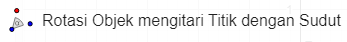

1. Tekan button pembahasan ( ) untuk melihat penjelasan jawaban pada contoh soal
) untuk melihat penjelasan jawaban pada contoh soal
2. Isilah jawaban pada titik-titik dengan benar
3. Jika jawaban benar, kotak berwarna hijau
4. Jika jawaban salah, kotak berwarna merah
 Rotasi dengan Pusat \[P(a,b)\]
Rotasi dengan Pusat \[P(a,b)\]

Pembahasan :
Menggambar Rotasi dengan pusat \[P(a,b)\] sejauh \[90^{\circ}\]
Jika telah mengisi jawaban dengan benar, cobalah gambar translasi pada bidang kartesius di bawah ini.
Langkah-langkahnya sebagai berikut:
1. Membuat titik
a. Misal membuat titik A (1,1) dengan mengklik menu 
b. Arahkan kursor ke bidang kartersius pada titik (1,1)
c. Kemudian klik pada titik yang telah dipilih
d. Lakukan hal yang sama untuk titik yang lainnya.
2. Membuat titik pusat
a. Misal membuat titik pusat P (1,2) dengan mengklik menu
b. Arahkan kursor ke bidang kartersius pada titik (1,2)
c. Kemudian klik pada titik yang telah dipilih
3. Membuat hasil bayangan dari rotasi
a. Klik menu 
b. Pilih 
c. Klik titik A
d. Kemudian klik titik pusat rotasi
e. Lalu masukkan sudut rotasi objek
4. Lakukan hal yang sama untuk titik yang lainnya
Pembahasan :
Menggambar Rotasi dengan pusat \[P(a,b)\] sejauh \[-90^{\circ}\]
Jika telah mengisi jawaban dengan benar, cobalah gambar translasi pada bidang kartesius di bawah ini.
Langkah-langkahnya sebagai berikut:
1. Membuat titik
a. Misal membuat titik A (1,1) dengan mengklik menu
b. Arahkan kursor ke bidang kartersius pada titik (1,1)
c. Kemudian klik pada titik yang telah dipilih
d. Lakukan hal yang sama untuk titik yang lainnya.
2. Membuat titik pusat
a. Misal membuat titik pusat P (1,2) dengan mengklik menu
b. Arahkan kursor ke bidang kartersius pada titik (1,2)
c. Kemudian klik pada titik yang telah dipilih
3. Membuat hasil bayangan dari rotasi
a. Klik menu 
b. Pilih
c. Klik titik A
d. Kemudian klik titik pusat rotasi
e. Lalu masukkan sudut rotasi objek
4. Lakukan hal yang sama untuk titik yang lainnya